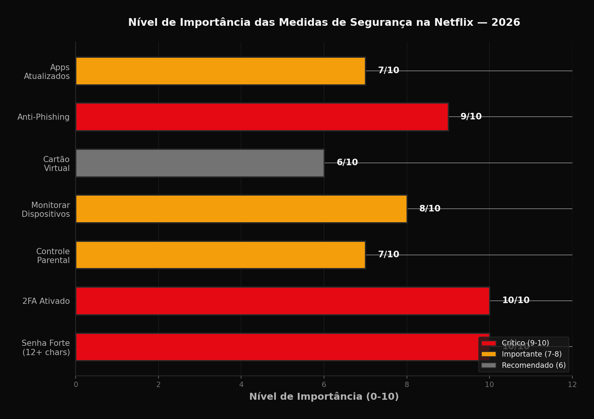

Com mais de 260 milhoes de assinantes globais, a Netflix e um alvo constante para tentativas de acesso nao autorizado. Em 2026, as ameacas evoluiram desde simples compartilhamento de senhas ate ataques de phishing sofisticados. Este guia ensina como criar e manter uma conta Netflix segura, protegendo seus dados pessoais e pagamento.
Checklist de Seguranca da Netflix
Veja o nivel de importancia de cada medida de seguranca para proteger sua conta:

Crie uma Senha Forte e Unica
A senha e a primeira linha de defesa. Use pelo menos 12 caracteres combinando letras maiusculas, minusculas, numeros e simbolos. Evite informacoes pessoais como datas de nascimento, nomes de pets ou sequencias obvias como "123456".
A Netflix nao permite senhas comuns como "password" ou "qwerty". Use um gerenciador de senhas como Bitwarden (gratuito) ou 1Password para criar e armazenar senhas complexas de forma segura.
Nunca reutilize sua senha da Netflix em outros sites. Vazamentos de dados em outras plataformas sao a principal forma como hackers obtem acesso a contas Netflix.
Ative a Autenticacao de Dois Fatores
A autenticacao de dois fatores (2FA) adiciona uma camada extra de seguranca. Alem da senha, voce precisa de um codigo enviado por SMS ou gerado por um app autenticador.
Para ativar: acesse Conta > Seguranca > Autenticacao de dois fatores. Escolha entre SMS (menos seguro) ou app autenticador como Google Authenticator ou Authy (recomendado).
Guarde os codigos de backup em local seguro. Eles permitem acessar sua conta caso perca o dispositivo autenticador. A Netflix fornece 10 codigos de backup durante a configuracao.
Configure o Controle Parental
O controle parental protege perfis infantis e limita acesso a conteudo inadequado. Acesse Gerenciar Perfis > Configuracoes de maturidade para definir classificacao etaria por perfil.
Em 2026, a Netflix aprimorou os controles parentais com: PIN para perfis especificos, bloqueio de titulos individuais, historico de visualizacao detalhado e notificacoes quando perfis infantis acessam conteudo restrito.
Crie um perfil separado para cada membro da familia. Isso evita que recomendacoes se misturem e permite controle granular do que cada pessoa pode assistir.
Monitore Dispositivos Conectados
Acesse Conta > Seguranca e Privacidade > Gerenciar dispositivos de acesso para ver todos os aparelhos logados na sua conta. A Netflix mostra o tipo de dispositivo, localizacao aproximada e data do ultimo acesso.
Desconecte dispositivos desconhecidos imediatamente. Se notar acessos de localizacoes estranhas, mude sua senha e revise as configuracoes de seguranca.
A Netflix permite desconectar todos os dispositivos remotamente. Isso e util apos compartilhar temporariamente a conta ou se suspeitar de acesso nao autorizado.
Proteja suas Informacoes de Pagamento
Use cartoes virtuais quando possivel. Bancos digitais como Nubank, Inter e C6 oferecem cartoes virtuais de uso unico ou limitado, reduzindo riscos em caso de vazamento.
Verifique regularmente seu historico de cobrancas na Netflix. Cobrancas indevidas ou planos alterados sem sua permissao podem indicar acesso nao autorizado.
Evite salvar cartao em dispositivos compartilhados. Se precisar usar um dispositivo publico ou de amigo, faca login, assista ao conteudo desejado e desconecte a conta ao terminar.
Reconheca Tentativas de Phishing
A Netflix nunca solicita senha, dados de pagamento ou informacoes pessoais por e-mail ou SMS. Mensagens solicitando esses dados sao tentativas de phishing.
Verifique o remetente: e-mails oficiais da Netflix terminam em @netflix.com. Links suspeitos geralmente usam dominios parecidos como netflix-support.com ou netflix-brasil.net.
Ao receber e-mails sobre problemas na conta, acesse diretamente netflix.com pelo navegador em vez de clicar em links do e-mail. Verifique se o site usa HTTPS (cadeado verde na barra de endereco).
Mantenha o App e Dispositivos Atualizados
Atualizacoes de seguranca corrigem vulnerabilidades conhecidas. Mantenha o app da Netflix, sistema operacional do dispositivo e firmware da Smart TV sempre atualizados.
Em dispositivos compartilhados como Smart TVs de hotel ou Airbnb, sempre faca logout apos o uso. Nao marque "Lembrar senha" em dispositivos que nao sao seus.
Use redes Wi-Fi seguras. Evite acessar sua conta Netflix em redes publicas nao protegidas. Se necessario, use uma VPN confiavel para criptografar a conexao.